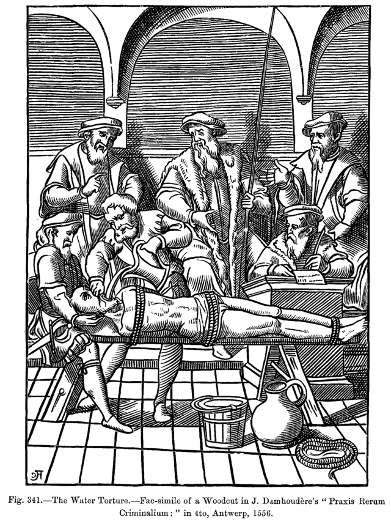
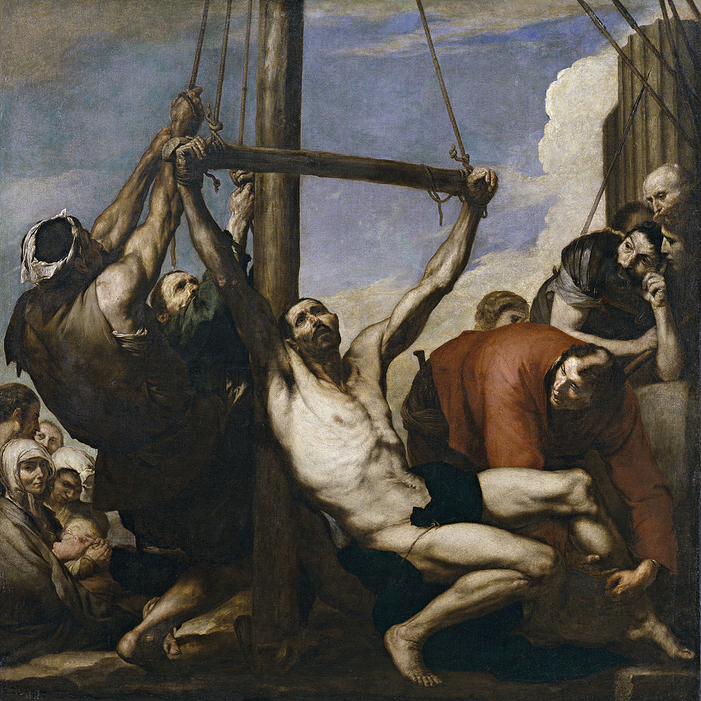

T O R T U R A
La tortura es el acto de infligir dolor físico o psicológico por parte de una autoridad pública, o de alguien amparado por ella, con el fin de obtener información o de conseguir "pruebas" para esclarecer un delito.1 Algunos autores proponen distinguir entre la tortura judicial —la que se ejerce durante el proceso penal para determinar la culpabilidad del acusado, hasta que fue abolida en Europa y en América a principios del siglo XIX— y la tortura extrajudicial —la que ejerce la autoridad gubernativa fuera del ámbito judicial propiamente dicho, especialmente cuando se trata de "delitos políticos"

El historiador británico Edward Peters destaca que las definiciones que se han dado de la tortura a lo largo de la historia son notablemente similares. Así, por ejemplo, el jurista romano Ulpiano declaró que la quaestio (como se llamaba la tortura en la Antigua Roma) es «el tormento del cuerpo para obtener la verdad». En el siglo XIII un jurisconsulto dio una definición casi idéntica: «La tortura es la indagación de la verdad por medio del tormento». Lo mismo sucede con otro jurisconsulto del siglo XVII: «La tortura es el interrogatorio mediante el tormento del cuerpo... legítimamente ordenado por un juez con el fin de obtener la verdad». Todas estas definiciones se refieren a la tortura judicial.3
La definición más aceptada en la actualidad es la que propuso la ONU en 1975. El artículo I de la Declaración contra la Tortura aprobada por la Asamblea General de las Naciones Unidas del 9 de diciembre de 1975 define la tortura de la siguiente forma:4
Para los Fines de esta Declaración, tortura significa todo acto por el cual se inflige intencionadamente un intenso dolor o sufrimiento, físico o mental, por, o a instigación de, un funcionario público, a una persona para fines tales como obtener de ella o de un tercera persona una información o confesión, castigarla por un acto que ha cometido o intimidarla, a ella o a otras personas.
Paul Valadier hace dos observaciones a esta definición. En primer lugar, que existen maneras sutiles de desequilibrar la psique de una persona, y, en segundo lugar, que no se debe de restringir la tortura al Estado, ya que esta puede darse y se da en diversas relaciones humanas.
Israel C.A.
Tortura y ordaía
La tortura introducía una mayor racionalidad que la ordalía respecto del método de prueba pues, como afirma el jurista español Francisco Tomás y Valiente, "parece más cercana a la verdad material la autocondena, esto es, la confesión de culpa, que la condena en virtud de ritos mágicos". La tortura mantenía una analogía evidente con el sacramento de la penitencia pues en ambos casos la imposición del castigo se basaba exclusivamente en la autoinculpación, aunque manteniendo una diferencia fundamental: en la penitencia la confesión es libre y en la tortura es arrancada mediante la coacción. En este sentido la tortura se aproximaba a la ordalía, como ya destacaron los pensadores ilustrados. Cesare Beccaria afirmó que la diferencia entre la tortura y la ordalía "es sólo aparente y no real. Hay tan poca libertad ahora para decir la verdad entre espasmos y desgarros, como la había entonces para impedir sin fraude los efectos del fuego y del agua hirviente". Gaetano Filangieri escribió: "Si se considera la tortura como criterio de verdad, se encontrará algo tan falaz, algo tan absurdo, como lo eran los Juicios de Dios".5
Tomás y Valiente, tras destacar la irracionalidad de ambos métodos de prueba y que la tortura es tan injusta y que puede ser más cruel que la ordalía, afirma que la tortura "como procedimiento para averiguar la verdad, aunque ciertamente falle en muchos casos y pese a que provocará con toda seguridad más confesiones que confesiones veraces, es innegable que resulta más eficaz que cualquier rito mágico ordálico. Sobre todo teniendo en cuenta que su eficacia opera en un doble sentido: como medio para descubrir la verdad, y como instrumento para intimidar al torturado y a quienes se sienten potencialmente en su lugar. Si no fuera eficaz la tortura en su doble efecto inquisitivo e intimidativo… no habría pervivido durante siglos ni habría resurgido en el nuestro [siglo XX]".

Tortura y penas corporalesa
Las diferentes formas de tortura han sido aplicadas también como pena corporal a los culpables de determinados delitos.
Los hebreos colgaban de un poste o de una cruz a los calumniadores y a los idólatras, y lapidaban a los blasfemos. La ley de Moisés señalaba la pena del fuego contra aquél que se hubiese casado con la madre y con la hija y condenaba a las mujeres al mismo género de muerte. Los palazos o la verberación era un castigo cruel bajo cuyos golpes morían a veces los criminales. Los persas infligían diversas clases de suplicio como pena a los reos condenados (véase Tortura en Persia).
En la Antigua Roma se condenaba a la crucifixión a los esclavos y a las personas de estratos y condiciones menos favorables. Antes de clavar a los reos en la cruz solían darles azotes con correas, sarmientos u otros instrumentos preparados al efecto. Plutarco dice que los reos condenados a muerte en la cruz estaban obligados a llevarla por sí mismos al patíbulo. Comúnmente, los aseguraban en la cruz por medio de clavos si bien otras veces los ataban con cuerdas. Este suplicio era tan común entre los antiguos que los latinos dieron al nombre de crux y a sus derivadas cruciatus y cruciare una significación que se refiere a toda suerte de penas y tormentos.
La costumbre de cortar la cabeza con la hoz es muy antigua. Los romanos la usaron desde los primeros tiempos de la fundación de su ciudad, por eso los lictores llevaban entre las haces una seguro para este objeto. En Atenas y Roma se castigaba a los traidores de la patria precipitándoles a un foso profundo o desde la roca Tarpeya, respectivamente. Mecio Fufecio, rey de Alba Longa, fue descuartizado por orden de Tulio Hostilio por haber violado la alianza que había hecho con los romanos.

Justificación legal del uso de la tortura en la actualidad
En 1971 el general Jacques Massu, jefe del ejército francés que actuó en la guerra de Argelia, publicó un libro de memorias titulado La verdadera batalla de Argel en el que justificó el empleo de la tortura en Argelia en base a las circunstancias del momento y a que la necesidad militar la imponía. Como ha señalado Edward Peters, "el libro es un ejemplo clásico de un argumento comúnmente usado para legitimar la tortura, un argumento que Massu no inventó, ni fue el único en citar: […] el argumento de que los torturadores pueden ser servidores responsables del Estado en tiempos de crisis extrema". El libro recibió una respuesta inmediata por parte de Alec Mellor -que en 1949 ya había publicado un libro de gran resonancia titulado La torture- con su obra Je dénonce la torture; de Jules Roy, autor de J'accuse le general Massu; y de Pierre Vidal-Naquet que publicó la traducción francesa de su libro Torture: Cancer of Democracy, publicado originariamente en inglés en 1963 y en el que denunciaba que el cáncer de la democracia no era la tortura misma sino la indiferencia hacia ella, al que siguió Les Crimes de l'armée francais ['Los Crímenes del ejército francés', 1977], en el que describió los horrores de la represión francesa durante la guerra de Argelia, ampliando un libro anterior publicado en 1962 con el título Raison d'etat ['Razón de Estado'].
Israel C.A.